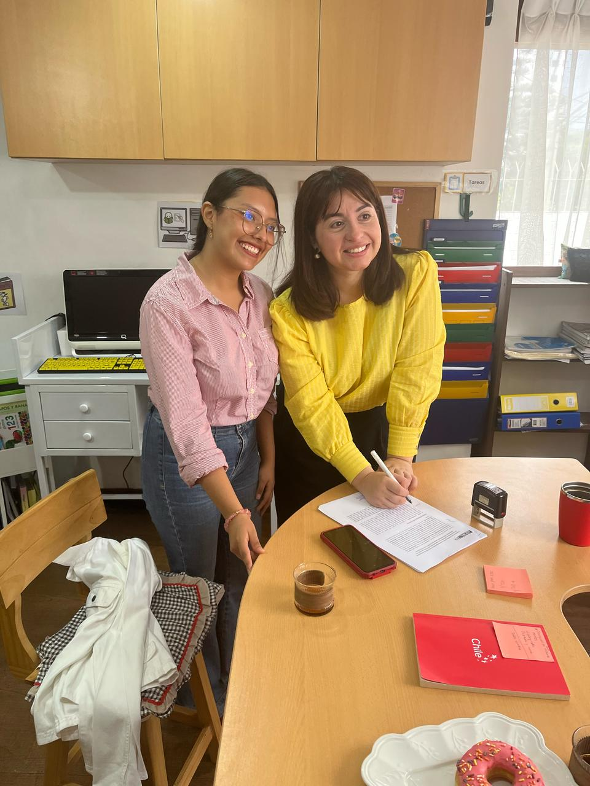

¿Qué hace la coordinación de SALES?
SALES es la coordinación encargada de generar alianzas estratégicas con organizaciones sociales que deseen implementar proyectos de voluntariado internacional. Nos enfocamos en encontrar ONGs, colegios, municipalidades, fundaciones y otras instituciones que busquen generar impacto en sus comunidades.
Responsabilidades principales:
- Buscar, contactar y negociar con potenciales aliados locales.
- Diseñar propuestas de valor alineadas a los Objetivos de Desarrollo Sostenible.
- Asegurar el cumplimiento de los requisitos operacionales para implementar los proyectos.
- Dar seguimiento a los partners actuales y mantener relaciones a largo plazo.